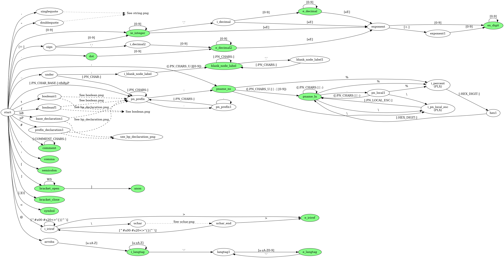

Finite Automata Design
1 Introduction
The first step of the parser is to recognize tokens from the input. Each token is a string with a determined meaning. These token are composed of specific characters and they can be recognized by an automata.
In this particular case, some tokens are defined in the grammar proposed by the RDF 1.1 Turtle specification. Some of the "production terminals" EBNF rules are considered as valid tokens whereas the rest are used to form a charater set for more complex tokens. For instance, the HEX rule is considered as a character set used by other rules to form complex tokens and IRIREF is a valid token that identifies an IRI reference.
The automata is defined mathematically as  where:
where:
- Σ is the unicode set of symbols.
- S is the set of possible states.
- s_0 is the starting state represented as the
startstate in the diagram. - δ is the state-transition function
 .
.
- F is a set with the final (or acceptance) states represented as green ellipses in the diagram.
The automata is a finite deterministic one. This means that the domain of the δ function is defined with all possible symbols for each state. Specifically, for each state in the aformentioned automata there is a tuple  for all Unicode symbol
for all Unicode symbol  . Considering the amount of unicode symbols, creating a directed graph diagram that represents all the state-transitions would be very difficult. Therefore, a convention should be created to shorten the diagram for making it simple and readable.
. Considering the amount of unicode symbols, creating a directed graph diagram that represents all the state-transitions would be very difficult. Therefore, a convention should be created to shorten the diagram for making it simple and readable.
2 Symbol grouping
In order to reduce the amount of edges, the symbols would be grouped into sets. For example, the HEX charset is composed by the digits 0 to 9 and letters "a" to "f" in lower and uppercase. This is represented in EBNF as HEX ::= ([0-9]|[a-f]|[A-F]).
The diagram will use these charsets instead of a symbol per edge. It must be noted that a non-deterministic automata could be created if a state has non-disjoint charsets as edges. Thus, the following rule is impossed: the same char should not appear in two or more charsets used as output edges from the same state. As oa contraexample: The charset LETTER and HEX should not appear as output edges from the same state because the letter "a" is on both charsets.
3 Blocking state
A blocking state is implicit in the diagram. This "blocking" state is reached when a char is not represented by an edge. For example, suppose that the automata reads the char "a", but on the diagram there's no edge with that letter for the current state. This means that the automata changes from the current state to the blocking state. Also, this blocking state changes into the same blocking state for any symbol readed (i.e.  where
where  is the blocking state).
is the blocking state).
In other words, for every state that there is no output edge for a certain character u, then this edge exists implicitly and leads to a state that won't accept any further input. This will reduce the amount of edges and the repetition of the same blocking state pattern over and over.
4 Diagram modularity
The diagram would be divided into subdiagrams. This is depicted in two ways:
- A state connected to another with a dashed arrow and a label with "See…"
- A state connected to an a "See…" label with a dashed arrow.
The first modularity represenation means that the state can transition through a subautomata and ends in the other state. The diagram indicated in the "See…" label contains the first and last state and how the substring is parsed by the subautomata. The second one means that after this state, the subautomata indicated by the "See…" label si to be used to continue the parsing process.
5 State-transition function design
The main overview of the automata is as follows.

5.1 String parsing
5.2 UCHAR parsing